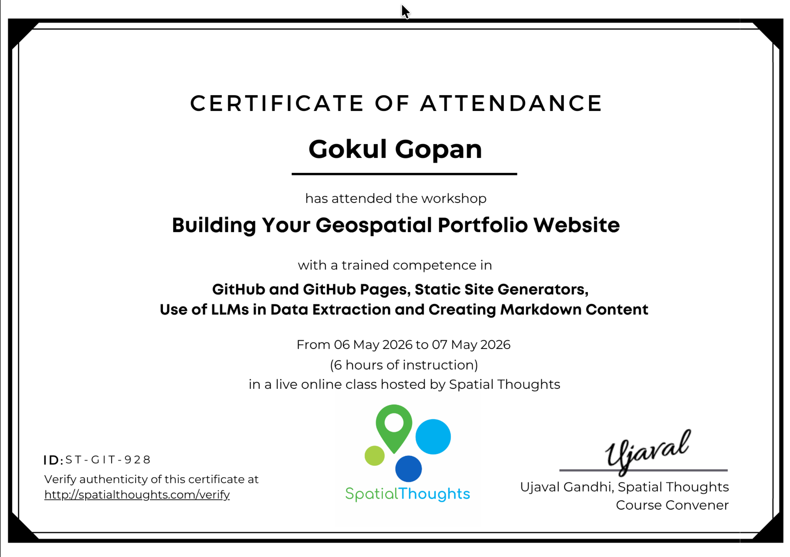

Zertifikate
Berufliche GIS- und Raumanalyse-Zertifikate, alle absolviert bei Spatial Thoughts (Ujaval Gandhi).

Einführung in QGIS
Spatial Thoughts · Dezember 2022

Advanced QGIS
Spatial Thoughts · Februar 2023

Python Foundation for Spatial Analysis
Spatial Thoughts · Juni 2023

PyQGIS Masterclass — QGIS mit Python anpassen
Spatial Thoughts · Juli 2023

Mastering GDAL Tools
Spatial Thoughts · Februar 2024

JavaScript
Frontend-Entwicklung · JavaScript-Grundlagen

Building Your Geospatial Portfolio Website
Spatial Thoughts · Mai 2026 · GitHub, GitHub Pages, Static Site Generators, LLMs